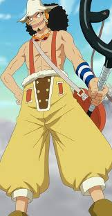

Fruta do Diabo que lhe concedeu a elasticidade do corpo, mas o tornou incapaz de nadar. Luffy é
corajoso, impulsivo e tem um grande coração. Ele sonha em se tornar o Rei dos Piratas e é o capitão
dos Mugiwara.

O filme conta sobre Monkey D. Luffy um garoto que sai para aventuras no mar com o betivo de se tornar o rei dos piratas tambem forma uma triulação completa com 10 membros
Monkey D. Luffy: O protagonista da série, ele é um jovem pirata com poderes de uma
Fruta do Diabo
que lhe concedeu a elasticidade do corpo, mas o tornou incapaz de nadar. Luffy é
corajoso, impulsivo
e
tem um grande coração. Ele sonha em se tornar o Rei dos Piratas e é o capitão
dos Mugiwara.
Roronoa Zoro: O espadachim talentoso e destemido da tripulação.
Zoro é conhecido por sua habilidade
com
três espadas e sua busca para se tornar o melhor espadachim
do mundo. Ele é leal a Luffy e sempre se
esforça para proteger seus companheiros.
Nami: A navegadora da tripulação e uma excelente
cartógrafa. Ela é habilidosa em roubar,
principalmente
para obter dinheiro para realizar seu sonho de
desenhar um mapa completo do mundo. Nami é
inteligente,
astuta e muitas vezes
serve como a voz da razão dentro do grupo.

Usopp: O atirador de elite e contador
de histórias dos Chapéus de Palha. Usopp é um mentiroso
notório
que frequentemente exagera suas realizações.
Apesar disso, ele é corajoso quando necessário e tem um
grande coração. Ele sonha em
se tornar um bravo guerreiro do mar.

"Perna Preta" Sanji,nascido como Vinsmoke Sanji,e também
é o cozinheiro dos Piratas do
Chapéu de Palha, assim como um antigo chefe de cozinha
do Baratie. Ele também é o terceiro filho e a
quarta
criança da Família Vinsmoke,tornando-o um príncipe
do Reino Germa, até que ele oficialmente os
renunciou duas vezes. Apesar de Sanji renunciar ao
seu sobrenome Vinsmoke, o Governo Mundial o rotula
como parte de seu nome em seu pôster de procurado.
Piece: Strong World" é o décimo filme da série de anime e mangá One Piece, criada por Eiichiro Oda. No enredo do filme, o temível pirata Shiki, conhecido como "O Leão Dourado", escapa da Impel Down, a prisão mais segura do mundo, e planeja um ataque ao East Blue, a primeira área explorada pelos Chapéus de Palha. Shiki é um antigo colega de Gol D. Roger, o lendário Rei dos Piratas, e ele planeja criar um novo mundo sob sua liderança. Para isso, ele sequestra Nami, a navegadora dos Chapéus de Palha, com o objetivo de fazer dela sua cartógrafa. Os Chapéus de Palha, liderados por Monkey D. Luffy, partem em uma jornada para resgatar Nami e impedir os planos de Shiki. Durante sua aventura, os Chapéus de Palha enfrentam diversas armadilhas e inimigos, enquanto descobrem segredos sobre o passado de Shiki e seu envolvimento com Gol D. Roger. Com muita ação, comédia e momentos emocionantes, o filme culmina em uma batalha épica entre Luffy e Shiki. "One Piece: Strong World" é conhecido por sua animação impressionante, trilha sonora cativante e uma história emocionante que cativa os fãs da série. Ele é considerado um dos melhores filmes de One Piece e é amplamente apreciado pela comunidade de fãs.
© 2024 Nome da Murilo. Todos os direitos reservados.